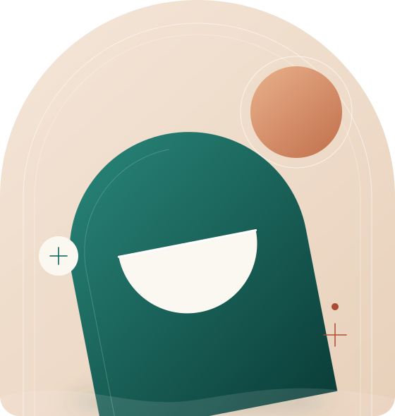
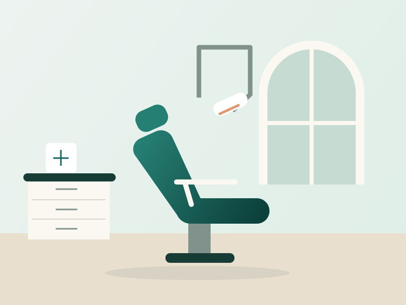
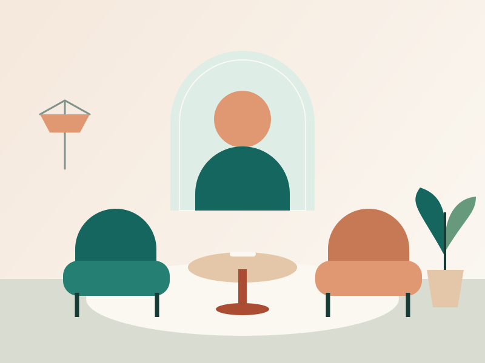

Escuta e acolhimento
Suas expectativas e receios fazem parte da conversa na avaliação.
Odontologia com acolhimento, informação e atenção a cada detalhe. Conheça as possibilidades para cuidar do seu sorriso.

Cuidado em cada detalheCada pessoa tem uma história. O seu plano de cuidado também deve ter.
Suas expectativas e receios fazem parte da conversa na avaliação.
Entenda as opções, as etapas e os cuidados antes de decidir.
Orientações para cuidar da saúde bucal em cada fase da vida.
A indicação de qualquer procedimento depende de avaliação profissional.
Avaliação da saúde bucal, higiene profissional e orientações para sua rotina.
Possibilidades e cuidados para um clareamento com acompanhamento profissional.
Opções de reabilitação para recuperar a função mastigatória e o sorriso.
Avaliação do alinhamento dos dentes e da mordida, com planejamento individual.
Ilustrações conceituais para esta demonstração. Estes ambientes não representam uma clínica real.


Selecione uma imagem para ver os detalhes.
Um caminho simples para conversar sobre suas necessidades.
Escolha o assunto e informe sua preferência de período. Aguarde a confirmação da equipe.
Compartilhe suas dúvidas e expectativas com o profissional. A avaliação orienta os próximos passos.
Peça explicações sobre alternativas, etapas e orçamento antes de decidir.
Relatos com acesso à publicação original.
Prepare uma solicitação. Data e horário dependem de confirmação da clínica.
Respostas para começar com tranquilidade.
O profissional conversa sobre suas necessidades, avalia sua saúde bucal e orienta sobre os próximos passos. Exames podem ser indicados conforme o caso.
Não. A equipe precisa confirmar a disponibilidade, a data e o horário diretamente com você.
Sim. Compartilhe seus receios com a equipe para que o atendimento possa respeitar suas necessidades.
Consulte a equipe. O orçamento depende da avaliação e do plano de tratamento indicado.
Consulte a equipe sobre convênios e cobertura antes de solicitar seu horário. Não há convênios confirmados nesta página.
Entre em contato com a equipe para confirmar a remarcação ou o cancelamento. Consulte os prazos e as condições aplicáveis ao seu atendimento.
Nesta demonstração, a clínica é ilustrativa e não possui local de atendimento.
Experimente o formulário com dados fictícios. Você pode compartilhar a mensagem pelo WhatsApp com um contato escolhido por você. Esta demonstração não possui contato de atendimento.
O formulário monta uma mensagem no navegador. Este site não envia o formulário para um servidor, não usa cookies de análise e não grava os dados do formulário em armazenamento local.
A escolha de tema claro ou escuro pode ser salva neste navegador para as próximas visitas. Essa preferência não inclui seu nome, mensagem ou informações de atendimento.
Ao clicar em “Enviar pelo WhatsApp”, a mensagem entra no link aberto na plataforma. Sem um destino configurado, você escolhe o contato; o envio é confirmado no próprio WhatsApp. Ao copiar, a mensagem vai para a área de transferência do dispositivo. Compartilhe apenas o que desejar e evite informações médicas.
O botão “Limpar dados” apaga os campos e a mensagem desta página. Ele não apaga a área de transferência nem mensagens que você já tenha compartilhado. O serviço de hospedagem poderá manter registros técnicos de acesso; esta explicação trata do código deste site.